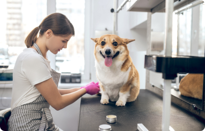
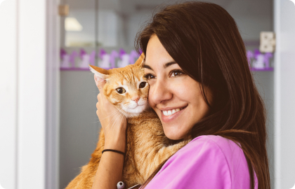
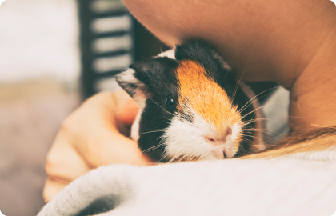
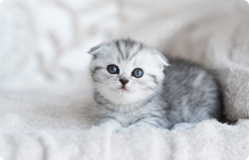
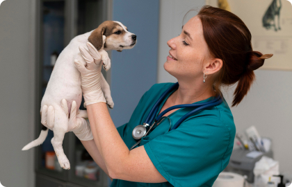
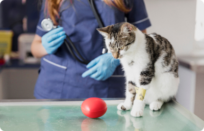
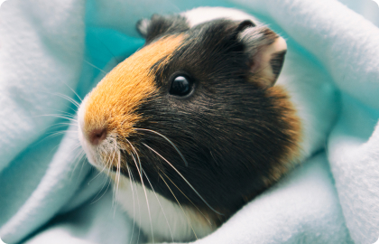
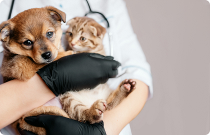

Ветеринарний центр «Vet House»
Ветеринарний центр пропонує цілодобову допомогу вашому домашньому улюбленцю. Лікарі щоденно готові надати широкий спектр ветеринарних послуг, а саме: консультації, вакцинації, чіпування, лікувальні, гігієнічні та діагностичні маніпуляції різного роду.
Допомога тваринам у Вінниці
цілодобова ветеринарна допомога
наші переваги
Чому обирають нас?
-

Iнноваційні методики діагностики та лікування
Задіюємо експертну апаратуру і лабораторне обладнання. Завдяки такому обладнанню ефективність медичної допомоги знаходиться на вищому рівні.
-
Унікальний підхід до домашніх улюбленців
В основі роботи ветеринарного центру – етика взаємодії з клієнтом і домашнім улюбленцем. Кожен вихованець для нас особливий, тому ми робимо все можливе, щоб він відчував себе чудово!
-
Зручні способи отримання медичної допомоги
Можна привезти домашнього улюбленця в клініку, застосувавши амбулаторне або стаціонарне лікування або викликати ветлікаря додому.
наші переваги
Чому обирають нас?
Vet House — прогресивний ветеринарний центр, де працюють висококваліфіковані спеціалісти.
Лікувальна робота лікарів базується на принципах доказової медицини. Тобто, лікування тварин проводиться згідно схем та протоколів, що опираються на результати клінічних досліджень та багаторічний досвід європейських колег. Разом з тим, лікар виконує індивідуальний підхід, аналізуючи та враховуючи особливості кожного пацієнта.
У центрі функціонує сучасна ветеринарна лабораторія, де виконується переважна більшість досліджень: загальні клінічні та біохімічні дослідження крові, цитологічні та мікроскопічні дослідження, ІФА та ІХА діагностика на вірусні хвороби, аналізи сечі тощо. Також нещодавно з'явилась нова послуга - коагулограма, для більш точної постановки діагнозу.
У центрі функціонує сучасна ветеринарна лабораторія, де виконується переважна більшість досліджень: загальні клінічні та біохімічні дослідження крові, цитологічні та мікроскопічні дослідження, ІФА та ІХА діагностика на вірусні хвороби, аналізи сечі тощо. Також нещодавно з'явилась нова послуга - коагулограма, для більш точної постановки діагнозу.
У центрі функціонує сучасна ветеринарна лабораторія, де виконується переважна більшість досліджень: загальні клінічні та біохімічні дослідження крові, цитологічні та мікроскопічні дослідження, ІФА та ІХА діагностика на вірусні хвороби, аналізи сечі тощо. Також нещодавно з'явилась нова послуга - коагулограма, для більш точної постановки діагнозу.
У центрі функціонує сучасна ветеринарна лабораторія, де виконується переважна більшість досліджень: загальні клінічні та біохімічні дослідження крові, цитологічні та мікроскопічні дослідження, ІФА та ІХА діагностика на вірусні хвороби, аналізи сечі тощо. Також нещодавно з'явилась нова послуга - коагулограма, для більш точної постановки діагнозу.
У центрі функціонує сучасна ветеринарна лабораторія, де виконується переважна більшість досліджень: загальні клінічні та біохімічні дослідження крові, цитологічні та мікроскопічні дослідження, ІФА та ІХА діагностика на вірусні хвороби, аналізи сечі тощо. Також нещодавно з'явилась нова послуга - коагулограма, для більш точної постановки діагнозу.
У центрі функціонує сучасна ветеринарна лабораторія, де виконується переважна більшість досліджень: загальні клінічні та біохімічні дослідження крові, цитологічні та мікроскопічні дослідження, ІФА та ІХА діагностика на вірусні хвороби, аналізи сечі тощо. Також нещодавно з'явилась нова послуга - коагулограма, для більш точної постановки діагнозу.
Чесні відгуки від реальних клієнтів
Відгуки про нашу роботу
Оберіть зручний час
Записатись на прийом
Наші контакти
Як нас знайти?
-
Контактні телефони:
-
Електрона адреса:
-
Адреса офісу:
21000, м. Вінниця, пр. Юності, 44
Корисна інформація
Статті та новини
-

Рекомендації щодо догляду за собаками
-

Рекомендації щодо догляду за котами
-

Морські свинки: правила утримання
-

Як піклуватися про цуценя або кошеня, яке залишилося без мами?
-

Рекомендації щодо догляду за собаками
-

Рекомендації щодо догляду за котами
-

Морські свинки: правила утримання
-

Як піклуватися про цуценя або кошеня, яке залишилося без мами?